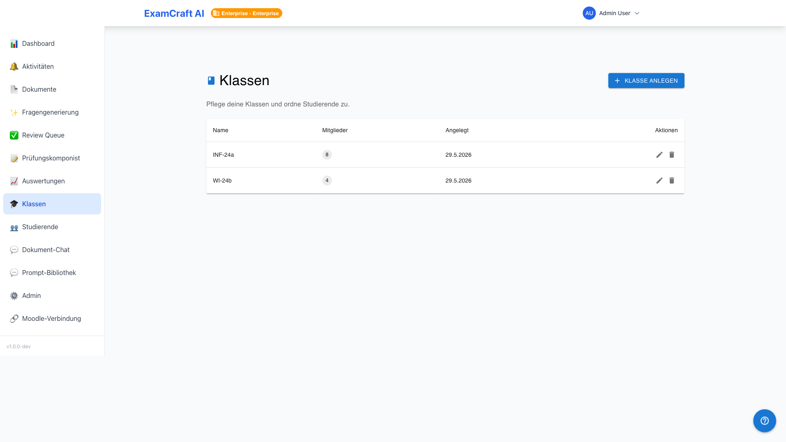
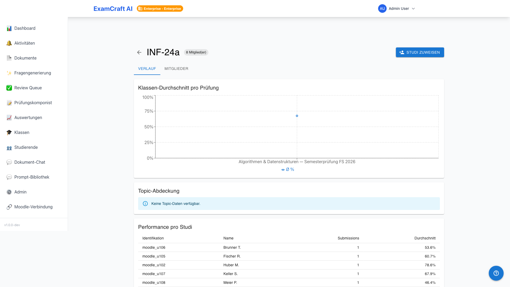
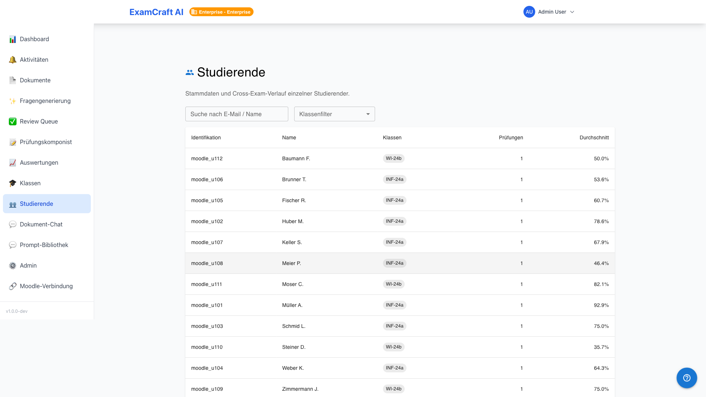
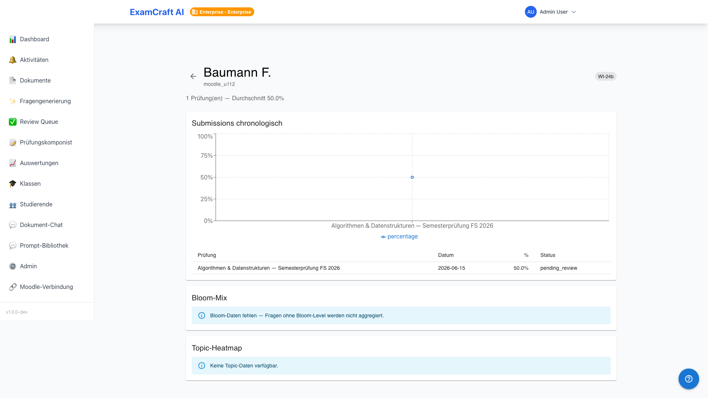

Classi e studenti
Nota sul tier
Le classi, le statistiche di andamento degli studenti e le valutazioni trasversali agli esami sono funzionalità Enterprise. Gli studenti vengono tuttavia creati automaticamente in tutti i tier durante l'importazione CSV e possono essere consultati.
Con le classi è possibile raggruppare gli studenti e ottenere una panoramica dello sviluppo delle loro prestazioni attraverso più esami. Route: /auswertungen/klassen, /auswertungen/klassen/:classId, /auswertungen/studierende, /auswertungen/studierende/:studentId.

Creare una classe
- Navigare a Valutazioni → Classi
- Fare clic su Crea classe
- Assegnare un nome (ad es. "Informatica B 2026")
- Facoltativo: inserire descrizione e anno scolastico
- Salva — la classe è ora vuota
Assegnare studenti
Selezionare la classe nell'elenco e fare clic su Assegna studenti. Nella finestra di dialogo è possibile aggiungere singoli studenti tramite ricerca oppure importare tutti i candidati di un esame importato.
Assegnazione automatica durante l'importazione CSV
Se il CSV di importazione contiene una colonna class_hint, gli studenti vengono assegnati automaticamente alla classe corrispondente — senza passaggio manuale. Le classi che non esistono ancora vengono create automaticamente.
Dettaglio della classe e andamento

Nel dettaglio della classe sono visibili tutti gli esami sostenuti finora:
| Vista | Contenuto |
|---|---|
| Grafico di andamento | Valore medio per esame in ordine cronologico |
| Elenco esami | Tutti gli esami con data, media e tasso di superamento |
| Elenco membri | Tutti gli studenti con il loro ultimo risultato |
Panoramica studenti

Navigare a Valutazioni → Studenti per una panoramica istituzionale di tutti i candidati con nome, e-mail, classe/i e data dell'ultimo esame.
Dettaglio studente

Il dettaglio di uno studente mostra:
- Tutte le submission in ordine cronologico con punteggio ottenuto e voto
- Grafico di andamento su tutti gli esami
- Mix della tassonomia di Bloom delle domande affrontate (se i tag sono stati assegnati)
- Mappa calore punti di forza/debolezza per area tematica (se i tag sono stati assegnati)